FINAL PROJECT
My final project was to build a robotic arm and design an end effector that I could then use as a platform for future software work. Namely, as someone mostly focused on software, I wanted something that would teach me a lot about things like gears, tolerances, and mechanics.
Design
The design was heavily inspired by tutorials I found online. However, part of the issue is that the parts were all designed for metric units and ours were imperial and also a lot of the deisgn files were corrupted. As such I had to re-do a lot of the gears and other parts. I also had to make some modifications to the design and this was all a great exercise in trying to make an accurate replica of something in fusion and/or trying to take something that has already been turned into a mesh and extract a normal file out fo it.Printing
The printing itself was brutal. Namely, the prints were long and prone to failure. This taught me a ton about printing. I had to learn how to adjust tolerances and also things like adjusting the speed and upping the temperature to help the first layer adhere. Moreover, I learned it was often easier to print slightlight faster and sand down then try to print with really tight tolerances which was a valuable lesson. Crafting the timing belts also proved really difficult. I needed for them to be under constant tension but also needed them to be strong and of custom sizes. In retrospect desiging around the sizes we had would have made more sense, but after experimenting with nails and glue I found what I think to be the best way to crft timing belts. Namely, you pin it together using a pin then sew together using nylon thread and cover with super clue. Finally, grind down the pin so its flush. The final step was controlling all the motors which I used 4 a4988 drivers for. I had to learn how to use these and also how to use the arduino to control them. I also had to learn how to use the arduino to control the servos for the end effector that I added which was a simple gripper. Making sure all the wiring was connected and getting sufficent amps to drive 4 servos was a challenge but I found a big enough wall supply to cover it and was happy with the results! 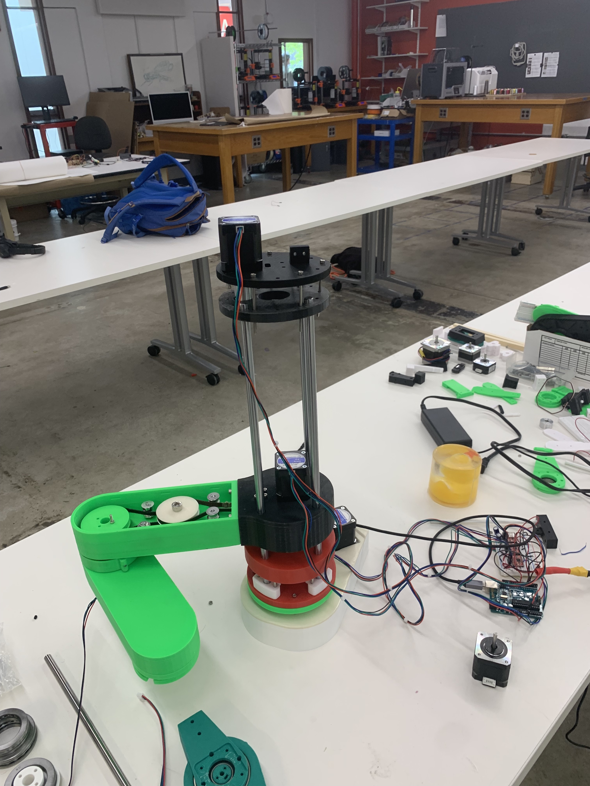 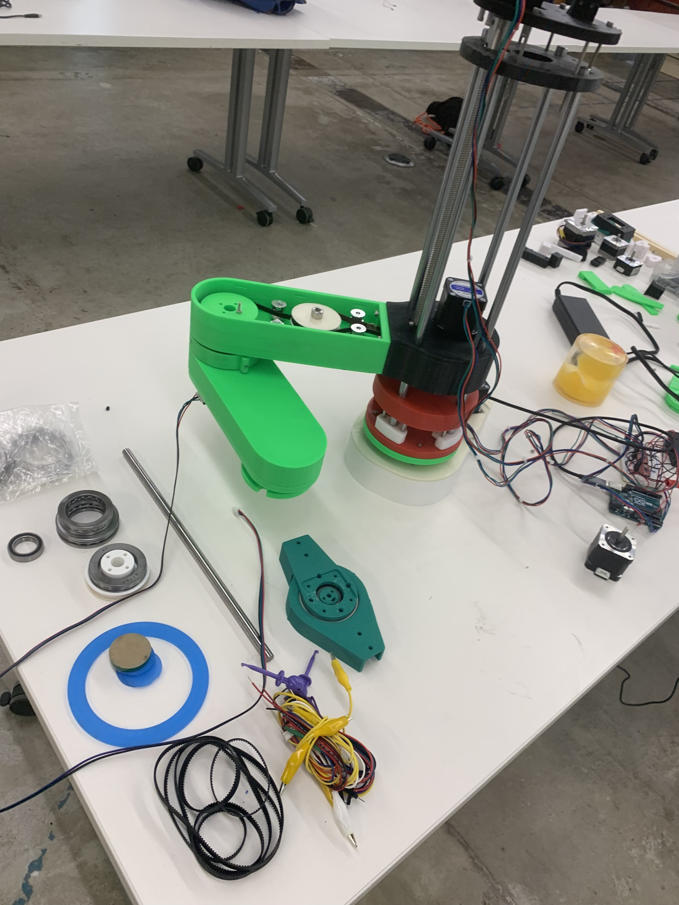 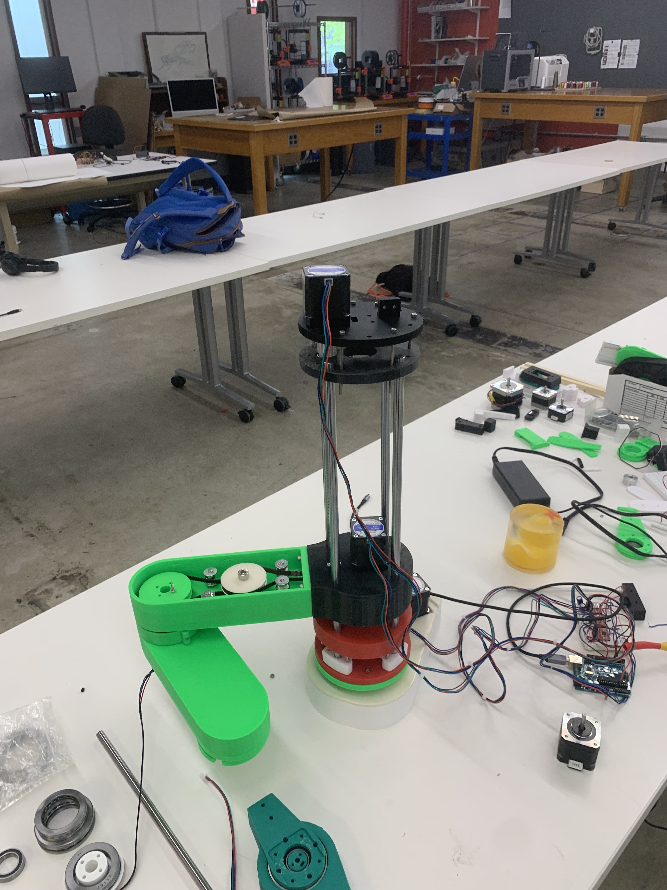 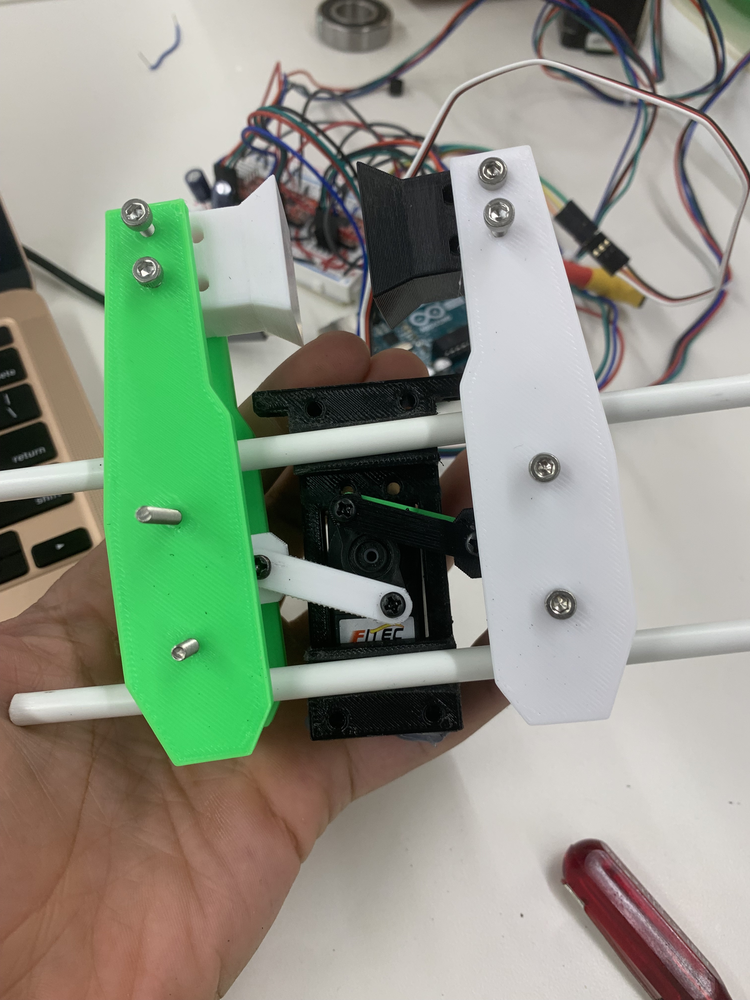
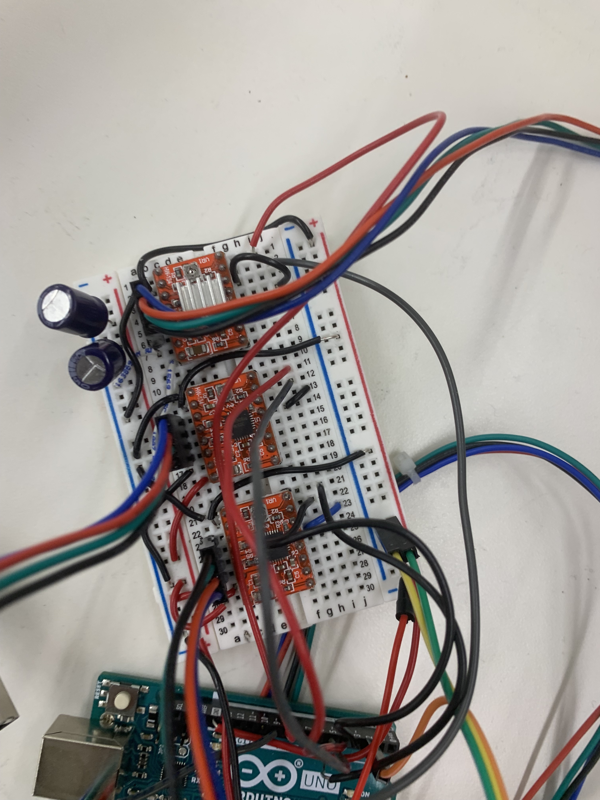
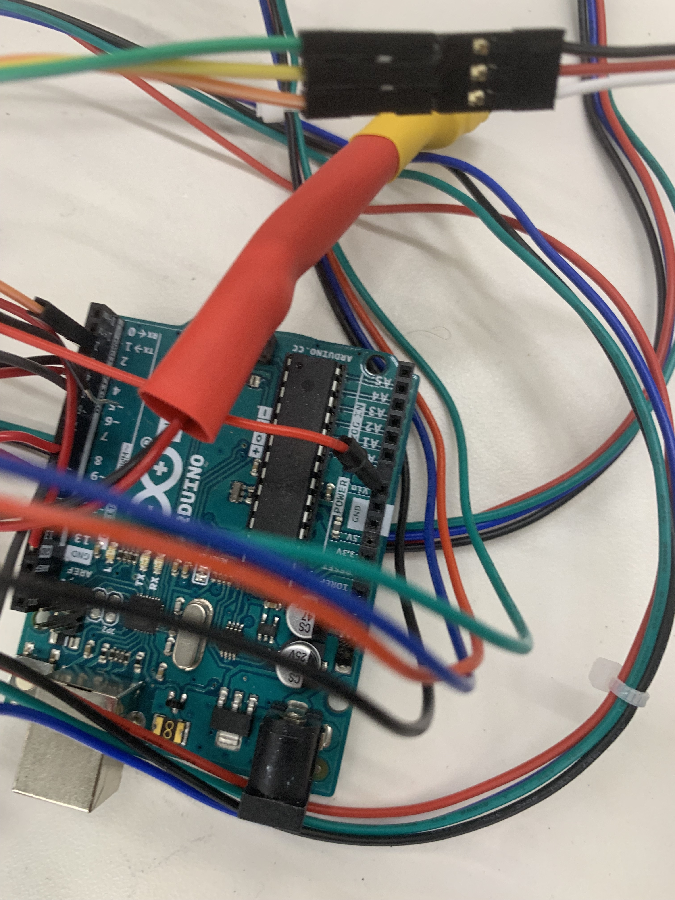
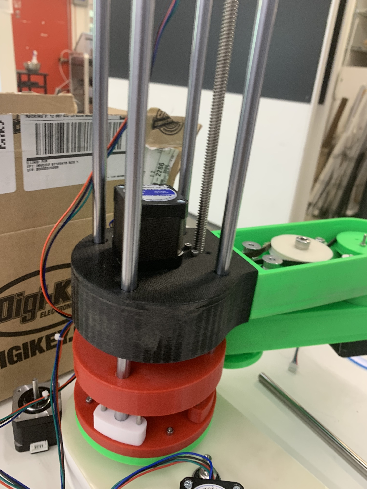
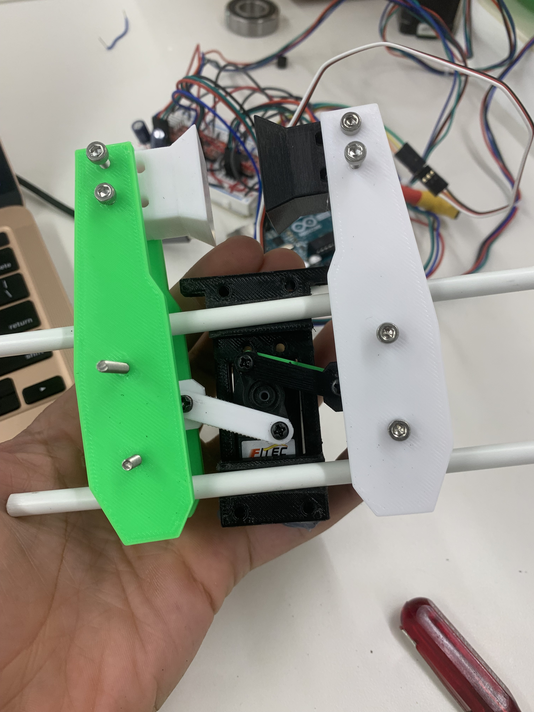
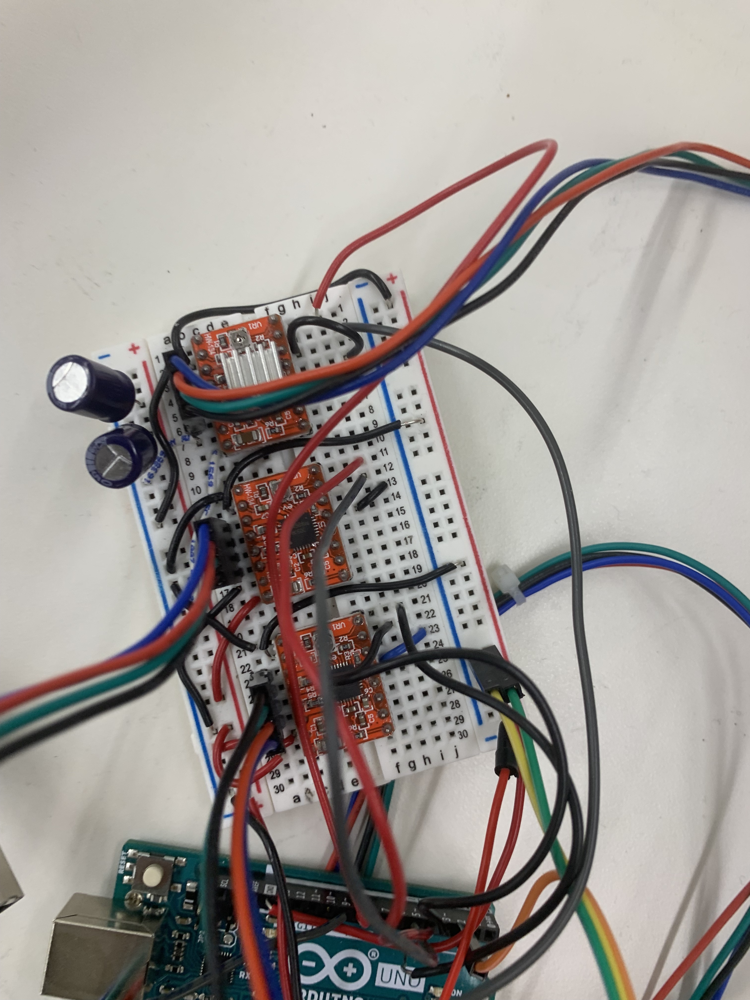
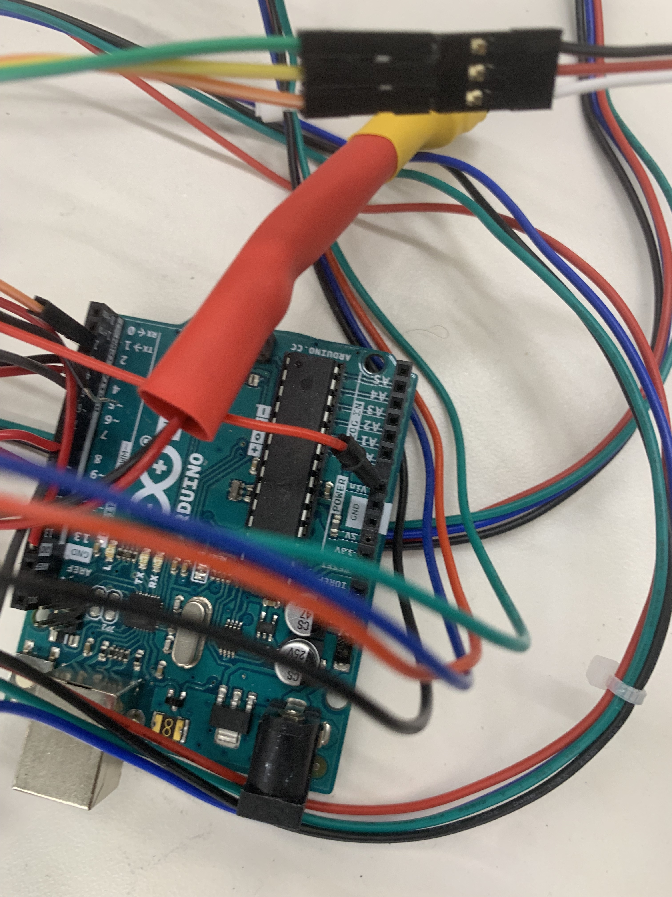
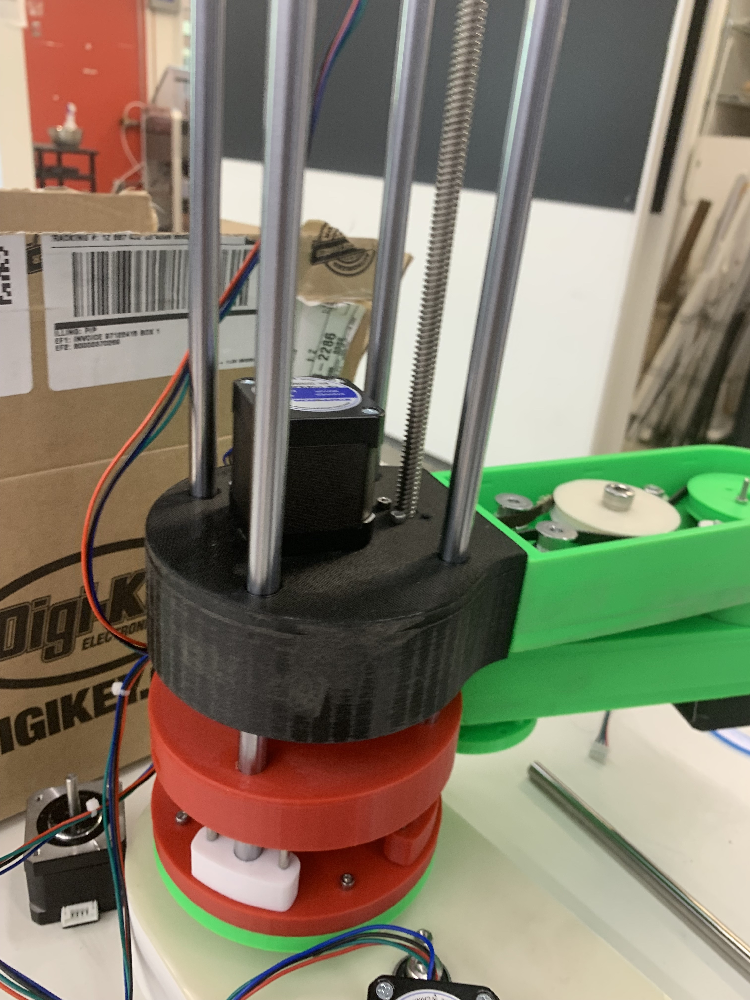